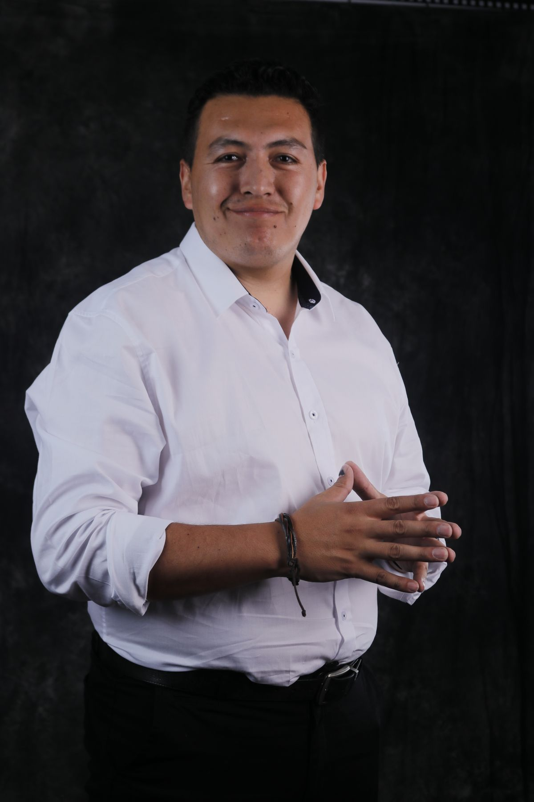
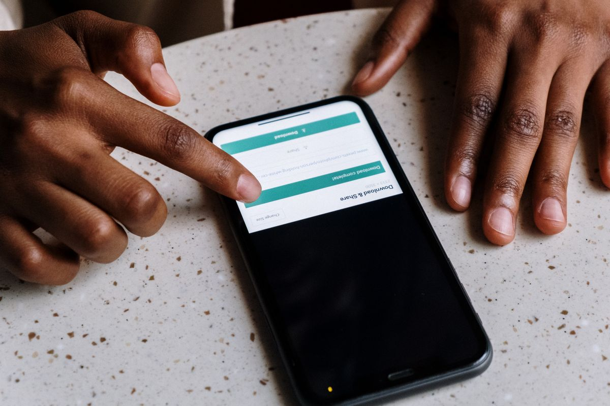
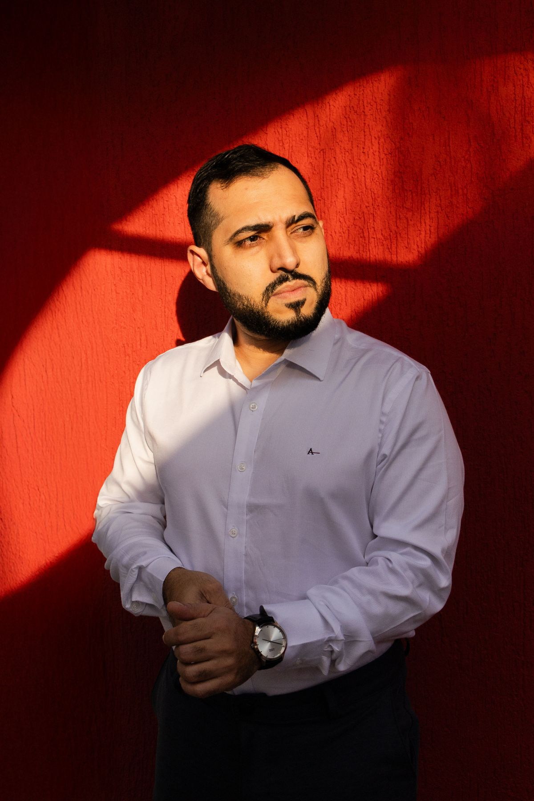

Berkas lamaran atau pendaftaranmu minta pas foto berlatar merah, tapi foto yang kamu punya berlatar putih atau malah foto santai di rumah? Kamu tidak harus ke studio foto hanya untuk mengganti warna latarnya. Dari HP saja, kamu bisa menghapus latar lama dan memasang warna merah atau biru dalam beberapa menit, gratis dan resmi.
Artikel ini menunjukkan caranya langkah demi langkah memakai Adobe Express yang penghapus latarnya gratis, plus alternatif remove.bg dengan batas jujurnya, berdasarkan keterangan resmi kedua layanan per Oktober 2026.
Cek dulu warna dan ukuran yang diminta
Jangan langsung mengedit sebelum membaca syarat berkasnya. Warna latar pas foto tidak satu aturan untuk semua keperluan: ada instansi yang meminta merah, ada yang meminta biru, dan kebiasaan lama mengaitkan warna dengan tahun kelahiran atau tahun pendaftaran tidak selalu dipakai lagi. Yang berlaku adalah pengumuman instansi tujuanmu, jadi baca bagian pas foto di pengumuman itu sampai selesai.
Ukuran yang paling sering diminta adalah 4x6 dan 3x4. Catat juga format dan batas ukuran berkasnya bila pendaftaran dilakukan online, karena sebagian portal membatasi berkas foto dalam ukuran kecil. Tiga hal ini, warna, ukuran cetak, dan batas berkas, menentukan hasil akhir yang perlu kamu buat.
Siapkan foto awal yang layak
Hasil ganti latar sangat ditentukan foto awalnya. Pakai foto menghadap lurus ke kamera, wajah terlihat penuh, dan pencahayaan merata tanpa bayangan keras di wajah. Pakai pakaian formal yang warnanya berbeda jauh dari warna latar tujuanmu: kemeja putih di atas latar merah atau biru akan terpotong rapi, sedangkan baju yang warnanya mirip latar tujuan bikin tepi foto susah dibedakan.
Latar awal tidak harus polos, tapi makin sederhana latarnya, makin bersih hasil potongannya, terutama di tepi rambut dan telinga. Adobe juga menyarankan foto dengan subjek yang jelas dan tepi yang tegas untuk hasil hapus latar terbaik. Simpan satu salinan foto asli yang tidak diedit, untuk berjaga jaga bila kamu perlu mengulang dari awal.

Cara ganti background pakai Adobe Express
Adobe Express adalah pilihan utama di artikel ini karena halaman resminya menyebut penghapusan latar sebagai fitur gratis, dan sesudah latar terhapus kamu bisa memasang latar baru berupa warna polos. Kamu perlu masuk dengan akun Adobe gratis. Langkahnya begini:
- Buka Adobe Express di browser HP kamu, lalu buka alat Remove Background dan ketuk Upload your photo.
- Pilih foto yang sudah kamu siapkan. Adobe Express menerima berkas JPEG dan PNG, dan latar foto akan terhapus otomatis dalam beberapa detik.
- Periksa tepinya. Bila ada bagian yang ikut terhapus atau masih tersisa, lanjutkan ke editor dan rapikan dengan alat Erase atau Restore yang disediakan.
- Tambahkan latar baru berupa warna polos, lalu pilih merah atau biru sesuai syarat instansimu. Atur posisi dan ukuran fotomu di tengah bidang.
- Unduh hasilnya. Bila pilihan unduhmu menghasilkan PNG berlatar warna tadi, simpan juga versi JPG bila portal pendaftaranmu hanya menerima JPG.
Satu catatan supaya kamu tidak salah berharap: penghapus latar di Canva termasuk fitur berbayar per Oktober 2026, jadi bila kamu membuka Canva dan menemukan fitur itu terkunci, itu memang aturannya, bukan kesalahan akunmu. Mulai dari Adobe Express dulu yang gratis.

Alternatif cepat: remove.bg, dengan batas jujur
Bila kamu butuh hasil yang sangat cepat, remove.bg juga bisa: unggah foto, latar terhapus otomatis, lalu buka Edit, pilih Background, pilih Color, dan tentukan warna merah atau biru, termasuk memasukkan kode warna sendiri bila instansimu menyebutkannya. Sesudah itu tinggal unduh.
Batas jujurnya ada di unduhan gratisnya. Unduhan gratis di remove.bg adalah gambar pratinjau beresolusi rendah, sampai 0,25 megapiksel, sedangkan unduhan resolusi penuh memakai kredit berbayar. Untuk pas foto kecil yang diunggah ke portal online, hasil pratinjau sering masih cukup. Untuk dicetak ukuran 4x6, periksa dulu ketajaman hasilnya dengan memperbesar tampilan sampai 100 persen: bila wajah terlihat pecah, pakai hasil Adobe Express atau ulangi dengan foto awal yang lebih besar.

Potong ke ukuran pas foto dan cek hasil akhir
Sesudah warnanya benar, potong foto mengikuti ukuran yang diminta. Rasio 4x6 sama dengan 2 banding 3, dan rasio 3x4 sama dengan 3 banding 4, jadi atur bingkai potong di editor fotomu memakai rasio itu, dengan kepala di bagian atas dan ruang kecil di atas kepala. Jangan memotong terlalu rapat sampai dagu atau rambut menempel ke tepi.
Terakhir, cek empat hal sebelum berkas dikirim: warna latar sudah sesuai pengumuman, wajah tidak berubah bentuk atau warna kulitnya, tepi rambut dan telinga bersih tanpa sisa latar lama, dan ukuran berkas tidak melebihi batas portal. Ingat juga bahwa foto yang kamu unggah ke layanan online diproses di server layanan itu, jadi pakai layanan resmi seperti dua di atas dan hindari situs penghapus latar acak yang tidak jelas pengelolanya.
Intinya
Cara ganti background pas foto itu intinya tiga langkah: siapkan foto formal yang tepinya jelas, hapus latar lama dan pasang warna merah atau biru di Adobe Express yang gratis, lalu potong ke rasio 4x6 atau 3x4 sesuai syarat instansi. remove.bg bisa jadi jalan pintas, dengan catatan unduhan gratisnya hanya pratinjau resolusi rendah. Per Oktober 2026, semua itu bisa kamu selesaikan dari HP tanpa biaya studio foto.
← Kembali ke Other